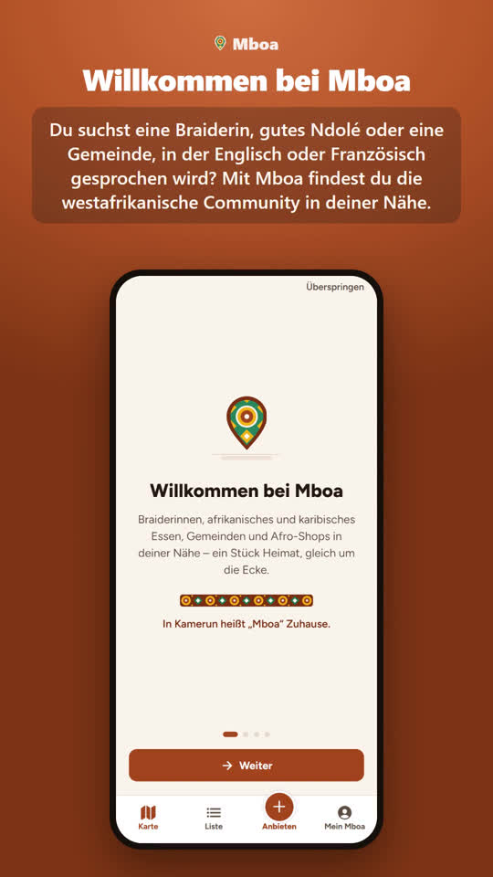

Ein Stück Heimat, gleich um die Ecke. Mboa ist die kostenlose Karte der afrikanischen und karibischen Community in Deutschland: Braids, Essen, Feiern, Gemeinden, Afro-Shops und Vereine in deiner Nähe.
A piece of home, just around the corner. Mboa is the free map of the African and Caribbean community in Germany: braids, food, events, churches, Afro shops and associations near you.
Un bout du pays, juste à côté. Mboa est la carte gratuite de la communauté africaine et caribéenne en Allemagne : tresses, cuisine, fêtes, églises, boutiques afro et associations près de chez toi.
Een stukje thuis, gewoon om de hoek. Mboa is de gratis kaart van de Afrikaanse en Caribische community in Nederland, België, Duitsland en andere Europese landen: braids, eten, feesten, kerken, afroshops en verenigingen bij jou in de buurt.
Un pedacito de casa, a la vuelta de la esquina. Mboa es el mapa gratuito de la comunidad africana y caribeña en España, Portugal, Italia, Alemania y otros países de Europa: trenzas, comida, fiestas, iglesias, tiendas afro y asociaciones cerca de ti.
Un pezzo di casa, dietro l’angolo. Mboa è la mappa gratuita della comunità africana e caraibica in Italia, Spagna, Portogallo, Germania e in altri paesi d’Europa: treccine, cibo, feste, chiese, negozi afro e associazioni vicino a te.
Um pedaço de casa, ao virar da esquina. A Mboa é o mapa gratuito da comunidade africana e caribenha em Portugal, Espanha, Itália, Alemanha e noutros países da Europa: tranças, comida, festas, igrejas, lojas afro e associações perto de si.
Kein Konto nötig, um zu suchen. Fragen?No account needed to search. Questions?Pas besoin de compte pour chercher. Des questions ?Geen account nodig om te zoeken. Vragen?No necesitas cuenta para buscar. ¿Preguntas?Non serve un account per cercare. Domande?Não precisa de conta para procurar. Dúvidas? kontakt@wemanage.de
Oben ins Suchfeld tippen, z. B. „Knotless“, „Ndolé“ oder „Kirche“, oder eine Kategorie wählen. Die Karte zeigt, was in deiner Nähe ist.
Type in the search box, e.g. “knotless”, “ndolé” or “church”, or pick a category. The map shows what is near you.
Tape dans la recherche, par ex. « knotless », « ndolé » ou « église », ou choisis une catégorie. La carte montre ce qui est près de toi.
Typ bovenaan in het zoekveld, bijv. „knotless”, „ndolé” of „kerk”, of kies een categorie. De kaart laat zien wat er bij jou in de buurt is.
Escribe en el buscador, p. ej. «knotless», «ndolé» o «iglesia», o elige una categoría. El mapa muestra lo que tienes cerca.
Scrivi nella ricerca, ad es. «knotless», «ndolé» o «chiesa», oppure scegli una categoria. La mappa mostra cosa c’è vicino a te.
Escreva na pesquisa, p. ex. «knotless», «muamba» ou «igreja», ou escolha uma categoria. O mapa mostra o que está perto de si.
Pin antippen oder „Liste“ öffnen. In den Details stehen Fotos, Preise, Sprachen, Öffnungs- oder Gottesdienstzeiten.
Tap a pin or open “List”. The details show photos, prices, languages, opening or service times.
Touche une épingle ou ouvre « Liste ». Les détails montrent photos, prix, langues, horaires ou heures de culte.
Tik op een speld of open „Lijst”. In de details staan foto's, prijzen, talen, openingstijden of tijden van de dienst.
Toca un pin o abre «Lista». En los detalles ves fotos, precios, idiomas, horarios de apertura o de culto.
Tocca un pin o apri «Elenco». Nei dettagli vedi foto, prezzi, lingue, orari di apertura o delle funzioni.
Toque num pin ou abra «Lista». Nos detalhes vê fotos, preços, idiomas, horários de abertura ou do culto.
„Per WhatsApp anfragen“ öffnet WhatsApp mit einer fertigen Nachricht. Ist der Preis verhandelbar, kannst du einen eigenen vorschlagen. Termin und Bezahlung macht ihr direkt miteinander aus.
“Ask via WhatsApp” opens WhatsApp with a ready message. If the price is negotiable, you can suggest your own. You agree on time and payment directly with each other.
« Demander par WhatsApp » ouvre WhatsApp avec un message prêt. Si le prix est négociable, tu peux proposer le tien. Rendez-vous et paiement se règlent directement entre vous.
„Vragen via WhatsApp” opent WhatsApp met een kant-en-klaar bericht. Is de prijs bespreekbaar, dan kun je zelf een prijs voorstellen. Afspraak en betaling regelen jullie rechtstreeks met elkaar.
«Preguntar por WhatsApp» abre WhatsApp con un mensaje ya escrito. Si el precio es negociable, puedes proponer el tuyo. Cita y pago los acordáis directamente.
«Chiedi su WhatsApp» apre WhatsApp con un messaggio già pronto. Se il prezzo è trattabile, puoi proporre il tuo. Appuntamento e pagamento li concordate direttamente.
«Perguntar por WhatsApp» abre o WhatsApp com uma mensagem já escrita. Se o preço for negociável, pode propor o seu. Hora e pagamento combinam diretamente.
★ Nur bei MboaOnly on MboaSeulement sur MboaAlleen op MboaSolo en MboaSolo su MboaSó na Mboa Angebote, die Leute aus der Community selbst eingetragen haben. Die findest du nicht bei Google Maps.Offers added by people from the community. You won’t find them on Google Maps.Des offres ajoutées par la communauté. Tu ne les trouves pas sur Google Maps.Aanbod dat mensen uit de community zelf hebben toegevoegd. Dat vind je niet op Google Maps.Ofertas publicadas por gente de la comunidad. No las encuentras en Google Maps.Offerte inserite dalla comunità stessa. Non le trovi su Google Maps.Ofertas publicadas por pessoas da comunidade. Não as encontra no Google Maps.
🌱 Neu bei MboaNew on MboaNouveau sur MboaNieuw op MboaNuevo en MboaNuovo su MboaNovo na Mboa In den letzten 30 Tagen eingetragen. Gib neuen Anbieterinnen eine Chance.Added in the last 30 days. Give new providers a chance.Ajouté ces 30 derniers jours. Donne une chance aux nouvelles.In de laatste 30 dagen toegevoegd. Geef nieuwe aanbieders een kans.Publicado en los últimos 30 días. Da una oportunidad a quien empieza.Inserito negli ultimi 30 giorni. Dai una possibilità a chi inizia.Publicado nos últimos 30 dias. Dê uma oportunidade a quem começa.
Du machst Braids, kochst, dekorierst Feiern oder hast einen Shop? Deine Leute finden dich hier und vertrauen dir.You do braids, cook, decorate events or run a shop? Your people find you here and trust you.Tu fais des tresses, tu cuisines, tu décores des fêtes ou tu as une boutique ? Les tiens te trouvent ici et te font confiance.Vlecht je, kook je, versier je feesten of heb je een winkel? Je mensen vinden je hier en vertrouwen je.¿Haces trenzas, cocinas, decoras fiestas o tienes una tienda? Tu gente te encuentra aquí y confía en ti.Fai treccine, cucini, decori feste o hai un negozio? La tua gente ti trova qui e si fida di te.Faz tranças, cozinha, decora festas ou tem uma loja? A sua gente encontra-o aqui e confia em si.
Auswählen, was du anbietest, und mit deiner E-Mail-Adresse anmelden. Du bekommst einen Code, kein Passwort nötig. Ein echter Name ist nicht nötig.
Choose what you offer and sign in with your email. You get a code, no password needed. No real name required.
Choisis ce que tu proposes et connecte-toi avec ton e-mail. Tu reçois un code, pas de mot de passe. Pas besoin de vrai nom.
Kies wat je aanbiedt en meld je aan met je e-mailadres. Je krijgt een code, geen wachtwoord nodig. Een echte naam is niet nodig.
Elige lo que ofreces e inicia sesión con tu correo. Recibes un código, sin contraseña. No hace falta tu nombre real.
Scegli cosa offri e accedi con la tua e-mail. Ricevi un codice, nessuna password. Non serve il tuo vero nome.
Escolha o que oferece e inicie sessão com o seu e-mail. Recebe um código, sem palavra-passe. Não precisa do nome verdadeiro.
Ort auf der Karte antippen. Privatleute werden nur ungefähr gezeigt, auf etwa 1 km gerundet. Bis zu 3 Fotos, Preise und dein Instagram oder TikTok zeigen, was du kannst.
Tap your location on the map. Individuals are only shown approximately, rounded to about 1 km. Up to 3 photos, prices and your Instagram or TikTok show what you can do.
Touche ton lieu sur la carte. Les particuliers sont affichés de façon approximative, à environ 1 km. Jusqu’à 3 photos, tes prix et ton Instagram ou TikTok montrent ce que tu sais faire.
Tik op de plaats op de kaart. Particulieren worden alleen bij benadering getoond, afgerond op ongeveer 1 km. Tot 3 foto's, prijzen en je Instagram of TikTok laten zien wat je kunt.
Toca tu lugar en el mapa. A los particulares solo se les muestra de forma aproximada, a unos 1 km. Hasta 3 fotos, precios y tu Instagram o TikTok muestran lo que sabes hacer.
Tocca il tuo luogo sulla mappa. I privati vengono mostrati solo in modo approssimativo, a circa 1 km. Fino a 3 foto, prezzi e il tuo Instagram o TikTok mostrano cosa sai fare.
Toque no seu local no mapa. Os particulares só são mostrados de forma aproximada, a cerca de 1 km. Até 3 fotos, preços e o seu Instagram ou TikTok mostram o que sabe fazer.
Unter „Mein Mboa“ schickst du deinen Eintrag per WhatsApp, druckst einen QR-Code für Salon oder Stand oder teilst ein fertiges Bild in deinem WhatsApp-Status oder deiner Instagram-Story.
Under “My Mboa” you can send your listing via WhatsApp, print a QR code for your salon or stall, or share a ready-made image in your WhatsApp status or Instagram story.
Dans « Mon Mboa », envoie ton annonce sur WhatsApp, imprime un QR code pour ton salon ou ton stand, ou partage une image prête dans ton statut WhatsApp ou ta story Instagram.
Onder „Mijn Mboa” stuur je je vermelding via WhatsApp, print je een QR-code voor je salon of kraam, of deel je een kant-en-klare afbeelding in je WhatsApp-status of Instagram-story.
En «Mi Mboa» puedes enviar tu anuncio por WhatsApp, imprimir un código QR para tu salón o puesto, o compartir una imagen lista en tu estado de WhatsApp o tu historia de Instagram.
In «Il mio Mboa» puoi inviare il tuo annuncio su WhatsApp, stampare un codice QR per il salone o il banco, o condividere un’immagine pronta nello stato WhatsApp o nella storia Instagram.
Em «A minha Mboa» pode enviar o seu anúncio por WhatsApp, imprimir um código QR para o salão ou a banca, ou partilhar uma imagem pronta no estado do WhatsApp ou na story do Instagram.
Wer regelmäßig gegen Geld anbietet, kümmert sich selbst um Gewerbe und Steuern. In der App steht unter „Gut zu wissen“ alles Wichtige dazu.If you offer services regularly for money, you take care of business registration and taxes yourself. “Good to know” in the app explains the essentials.Si tu proposes régulièrement contre de l’argent, tu t’occupes toi-même de l’enregistrement et des impôts. « Bon à savoir » dans l’app explique l’essentiel.Wie regelmatig tegen betaling iets aanbiedt, regelt zelf de inschrijving en belastingen. In de app staat onder „Goed om te weten” alles wat belangrijk is.Si ofreces servicios con regularidad a cambio de dinero, te ocupas tú del alta y de los impuestos. «Bueno saberlo» en la app explica lo esencial.Se offri servizi regolarmente a pagamento, la registrazione dell’attività e le tasse spettano a te. «Buono a sapersi» nell’app spiega l’essenziale.Se oferece serviços regularmente a troco de dinheiro, o registo da atividade e os impostos são consigo. «Bom saber» na app explica o essencial.

Video ansehenWatch the videoVoir la vidéoVideo bekijkenVer el vídeo (en inglés)Guarda il video (in inglese)Ver o vídeo (em inglês)Nichts. Suchen und Eintragen sind kostenlos, es gibt keine Werbung und keine Provision.
Nothing. Searching and listing are free, with no ads and no commission.
Rien. Chercher et s’inscrire sont gratuits, sans publicité ni commission.
Niets. Zoeken en toevoegen is gratis, er is geen reclame en geen commissie.
Nada. Buscar y publicar es gratis, sin publicidad y sin comisiones.
Niente. Cercare e inserire è gratis, senza pubblicità e senza commissioni.
Nada. Procurar e publicar é grátis, sem publicidade e sem comissões.
Zuerst Angebote aus der Community bis 30 km, dann alles nach Entfernung. Einen besseren Platz kann niemand kaufen.
Community offers within 30 km first, then everything by distance. Nobody can buy a better spot.
D’abord les offres de la communauté à moins de 30 km, puis tout par distance. Personne ne peut acheter une meilleure place.
Eerst aanbod uit de community tot 30 km, daarna alles op afstand. Een betere plek kan niemand kopen.
Primero las ofertas de la comunidad hasta 30 km, luego todo por distancia. Nadie puede comprar un puesto mejor.
Prima le offerte della comunità entro 30 km, poi tutto per distanza. Nessuno può comprare un posto migliore.
Primeiro as ofertas da comunidade até 30 km, depois tudo por distância. Ninguém pode comprar um lugar melhor.
Nein. Mboa stellt nur den Kontakt her. Preis, Termin und Bezahlung macht ihr direkt miteinander aus.
No. Mboa only puts you in touch. Price, time and payment are agreed directly between you.
Non. Mboa vous met seulement en contact. Prix, rendez-vous et paiement se règlent directement entre vous.
Nee. Mboa brengt alleen het contact tot stand. Prijs, afspraak en betaling regelen jullie rechtstreeks met elkaar.
No. Mboa solo os pone en contacto. Precio, cita y pago se acuerdan directamente.
No. Mboa vi mette solo in contatto. Prezzo, appuntamento e pagamento si concordano direttamente.
Não. A Mboa só faz a ligação. Preço, hora e pagamento combinam-se diretamente.
Unten in den Details „Falschen Eintrag melden“ antippen. Gehört der Laden dir, kannst du ihn dort auch übernehmen.
Tap “Report wrong listing” at the bottom of the details. If it is your business, you can claim it there too.
Touche « Signaler une fausse annonce » en bas des détails. Si c’est ton commerce, tu peux aussi le revendiquer.
Tik onderaan in de details op „Foute vermelding melden”. Is de winkel van jou, dan kun je hem daar ook overnemen.
Toca «Denunciar anuncio erróneo» abajo en los detalles. Si es tu negocio, también puedes reclamarlo ahí.
Tocca «Segnala annuncio errato» in fondo ai dettagli. Se è la tua attività, puoi anche rivendicarla lì.
Toque em «Denunciar anúncio errado» no fim dos detalhes. Se for o seu negócio, também o pode assumir aí.
Von der Community selbst und aus öffentlichen Quellen wie OpenStreetMap und Webseiten von Gemeinden und Vereinen.
From the community itself and from public sources such as OpenStreetMap and websites of churches and associations.
De la communauté elle-même et de sources publiques comme OpenStreetMap et les sites d’églises et d’associations.
Van de community zelf en uit open bronnen zoals OpenStreetMap, Overture Maps, openbare verenigingsregisters en websites van kerken en verenigingen.
De la propia comunidad y de fuentes abiertas como OpenStreetMap, Overture Maps, registros públicos de asociaciones y webs de iglesias y asociaciones.
Dalla comunità stessa e da fonti aperte come OpenStreetMap, Overture Maps, registri pubblici delle associazioni e siti di chiese e associazioni.
Da própria comunidade e de fontes abertas como OpenStreetMap, Overture Maps, registos públicos de associações e sites de igrejas e associações.